Buildings 58
Sort
 Braga Municipal Stadium2003 · Braga
Braga Municipal Stadium2003 · Braga Millennium Dome1999 · London
Millennium Dome1999 · London London Eye2000 · London
London Eye2000 · London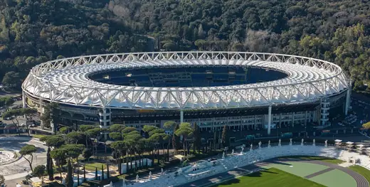
Stadio Olimpico1953 · Rome Torre de Collserola1992 · Barcelona
Torre de Collserola1992 · Barcelona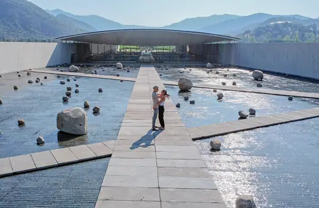
Viña Vik Winery2014 · Millahue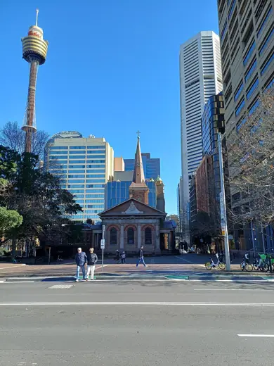
Sydney Tower (Centrepoint Tower)1981 · Sydney St. Paul's Cathedral, Abidjan1985 · Abidjan
St. Paul's Cathedral, Abidjan1985 · Abidjan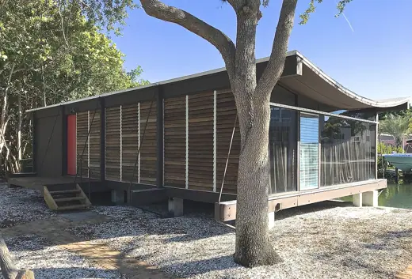
Healy Guest House (Cocoon House)1950 · Sarasota Tanzbrunnen (Star Wave Tent)1957 · Cologne
Tanzbrunnen (Star Wave Tent)1957 · Cologne West Japan General Exhibition Center1977 · Kitakyushu
West Japan General Exhibition Center1977 · Kitakyushu Munich Olympic Stadium1972 · Munich
Munich Olympic Stadium1972 · Munich Hajj Terminal, King Abdulaziz International Airport1981 · Jeddah
Hajj Terminal, King Abdulaziz International Airport1981 · Jeddah Washington Dulles Airport Terminal1962 · Chantilly
Washington Dulles Airport Terminal1962 · Chantilly New York State Pavilion1964 · New York City
New York State Pavilion1964 · New York City Montreal Olympic Stadium1976 · Montreal
Montreal Olympic Stadium1976 · Montreal Onagawa Station2015 · Onagawa
Onagawa Station2015 · Onagawa Moses Mabhida Stadium2009 · Durban
Moses Mabhida Stadium2009 · Durban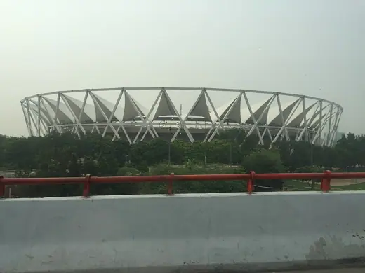
Jawaharlal Nehru Stadium2010 · New Delhi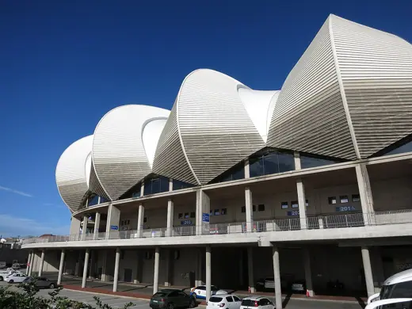
Nelson Mandela Bay Stadium2009 · Gqeberha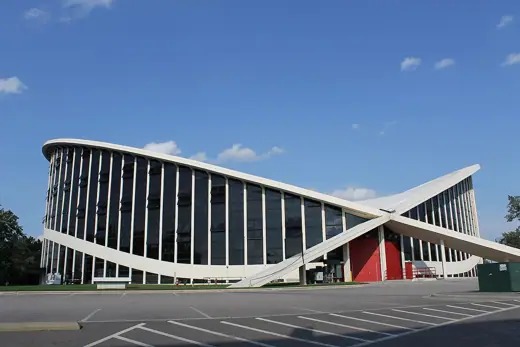
J. S. Dorton Arena1952 · Raleigh Chords Bridge2008 · Jerusalem
Chords Bridge2008 · Jerusalem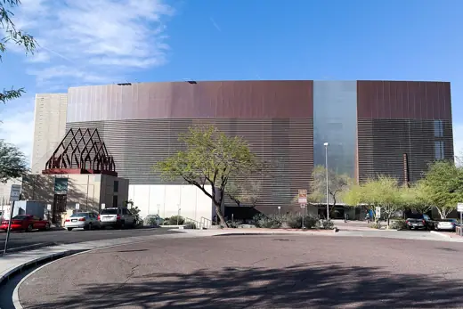
Burton Barr Central Library1995 · Phoenix London Stadium2011 · London
London Stadium2011 · London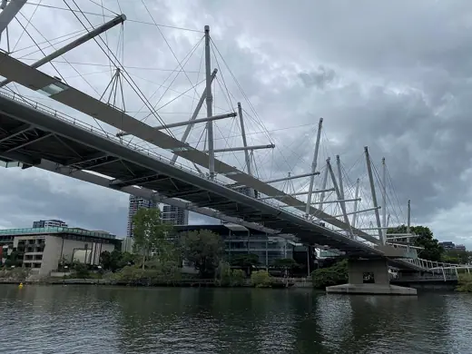
Kurilpa Bridge2009 · Brisbane London Velodrome2011 · London
London Velodrome2011 · London Bac de Roda Bridge1987 · Barcelona
Bac de Roda Bridge1987 · Barcelona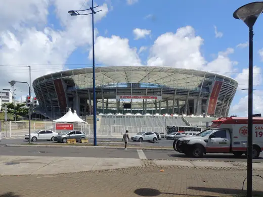
Arena Fonte Nova2013 · Salvador Paper Dome (Paper Church)2008 · Puli
Paper Dome (Paper Church)2008 · Puli Dresden Central Station1898 · Dresden
Dresden Central Station1898 · Dresden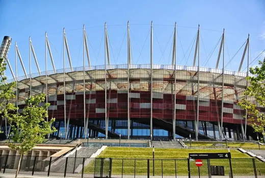
National Stadium (PGE Narodowy)2011 · Warsaw King Fahd National Library2013 · Riyadh
King Fahd National Library2013 · Riyadh Sidney Myer Music Bowl1959 · Melbourne
Sidney Myer Music Bowl1959 · Melbourne Teatro Regional del Biobío2018 · Concepción
Teatro Regional del Biobío2018 · Concepción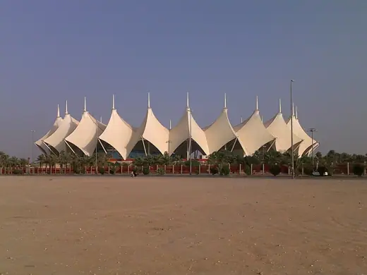
King Fahd International Stadium1987 · Riyadh Yoyogi National Gymnasium1964 · Tokyo
Yoyogi National Gymnasium1964 · Tokyo Millau Viaduct2004 · Millau
Millau Viaduct2004 · Millau Centre Pompidou-Metz2010 · Metz
Centre Pompidou-Metz2010 · Metz Sony Center2000 · Berlin
Sony Center2000 · Berlin Most SNP (UFO Bridge)1972 · Bratislava
Most SNP (UFO Bridge)1972 · Bratislava Zubizuri1997 · Bilbao
Zubizuri1997 · Bilbao Alamillo Bridge1992 · Seville
Alamillo Bridge1992 · Seville Steilneset Memorial2011 · Vardø
Steilneset Memorial2011 · Vardø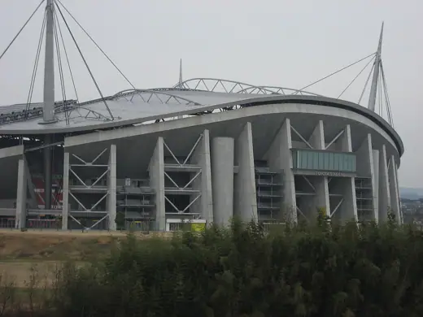
Toyota Stadium2001 · Toyota Spodek1971 · Katowice
Spodek1971 · Katowice Khan Shatyr Entertainment Center2010 · Astana
Khan Shatyr Entertainment Center2010 · Astana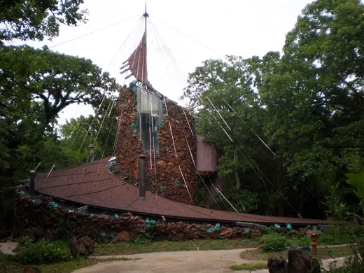
Bavinger House1955 · Norman